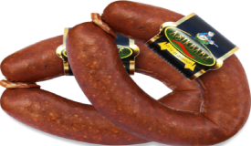

Afyon Sucuğu, tescil belgesine göre sığır karkas eti ile en az %15 oranında manda etinin birlikte kullanıldığı, iç yağı ve baharatla hazırlanıp sığır bağırsağına doldurulan bir sucuktur. Bu tarifte belgedeki bileşim oranları esas alınmış, izin verilen üst sınırlar olan stabilizör, koruyucu ve antioksidan kalemleri ise kullanılmamıştır. Ev ortamında fermantasyon ve kurutmanın sıcaklık ile nemini güvenle kontrol etmek zor olduğundan sucuk soğukta dinlendirilir ve kurutulur, belgede de yer alan ısıl işlem yaklaşımına uygun olarak servis sırasında iyice pişirilerek tüketilir.